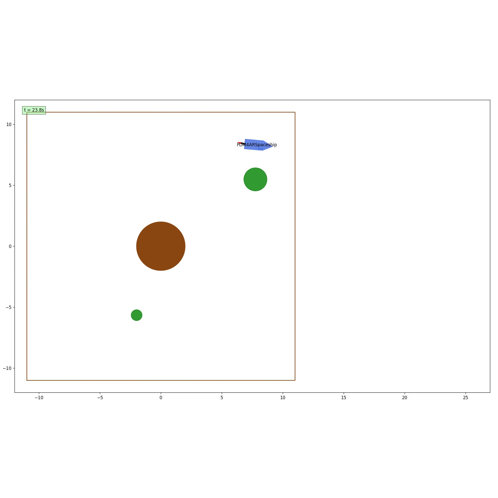

Project · Planning and Decision Making for Autonomous Robots
Spaceship Trajectory Planning
SCvx · CVXPY/ECOS · first-order-hold discretization · closed-loop replanning

The exercise was to implement the planning stack for a simulated spaceship agent. In closed-loop evaluation, the simulator repeatedly provided the spaceship state and obstacle states, and the agent had to return actuation commands for thrust and thrust-angle rate while keeping the existing simulator interface intact.
The task combined nonlinear vehicle dynamics with mission constraints: reach the target position, orientation, and velocity; finish with zero terminal input; keep enough mass/fuel; stay inside the allowed map bounds; respect thrust, steering-angle, and steering-rate limits; and avoid planets and moving satellites. The tested scenarios covered a planet-only docking task, a planet-and-satellites task with a static target, and a planet-and-satellites docking task.
I implemented the planner using sequential convexification. The nonlinear spaceship model and its Jacobians were generated with SymPy, then discretized with first-order hold over a 50-step horizon. Each convex subproblem was solved with CVXPY/ECOS using virtual-control slack variables, linearized obstacle constraints, a trust-region update, and an objective balancing final time, fuel/control effort, and constraint violation penalties.
The runtime agent tracked the planned command sequence and triggered replanning when the measured state diverged from the expected trajectory. This made the solution work as a closed-loop controller rather than a one-shot open-loop path, which was important for moving satellites and simulator deviations.